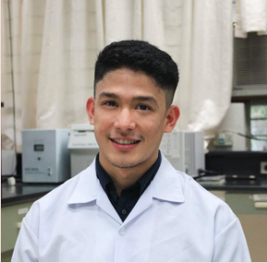
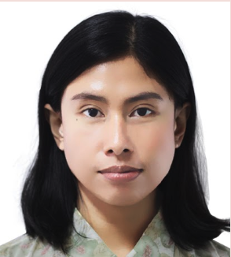
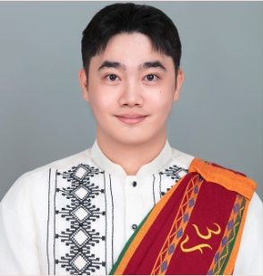
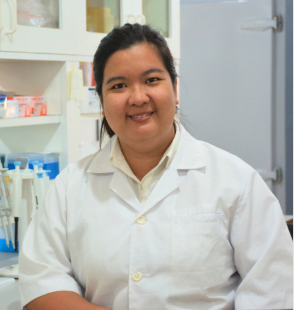

PhD Scholars

|
Name | Marianne Yssabelle Sabdao Lunas |
| Philippine affiliation | Bicol University College of Science | |
| University | Gyeongsang National University | |
| Mentor | Professor Yang Jae Kang | |
| Research | Comparative Genomic Analysis of Capsicum species in South Korea and Philippines |

|
Name | Jickerson Lado |
| Philippine affiliation | University of the Philippines Los Baños | |
| University | Seoul National University | |
| Mentor | Professor Tae-Jin Yang | |
| Research | Nuclear and organellar genome analysis of economically-important members of the Apiaceae, Apocynaceae, and Apiaceae families and other medicinal plants
Understanding the chimeric phenomenon in plants based on their complete plastomes and 45S nrDNA High-quality chromosome-level genome assembly and annotation of makapuno-like endosperm of coconut cultivars |
| Name | Evangeline Pascual | |
| Philippine affiliation | University of the Philippines Los Baños | |
| University | Chungnam National University | |
| Mentor | Professor Changsoo Kim | |
| Research | Epigenomics in Rice |
| Name | Therese Julienne Medina | |
| Philippine affiliation | University of the Philippines Los Baños | |
| University | Kyungpook National University | |
| Mentor | Professor Je Min Lee | |
| Research | Genomics and breeding in tomato for fruit quality improvement |
| Name | Bernabeth Tendero | |
| Philippine affiliation | Philippine Genome Center - Program for Agriculture, UPLB | |
| University | Handong Global University | |
| Mentor | Professor Ah Ram Kim | |
| Research | Whole-genome sequencing of Philippine Native Stingless Bee, Tetragonula biroi
Dissecting the regulatory mechanism of Coagulation Factor 8 gene (FVIII) using a massively parallel reporter assay |
|  | Name | Emmanuel Galang |
| Philippine affiliation | University of the Philippines Los Baños | |
| University | Pusan National University | |
| Mentor | Professor Soon Wook Kwon | |
| Research | GWAS to assess and mine genetic info on combined heat and drought stress resistance (rice) |
| Name | Aira Janella Elec | |
| Philippine affiliation | University of the Philippines Los Baños | |
| University | Jeonbuk National University | |
| Mentor | Professor Beum-Chang Kang | |
| Research | Optimizing the protocol of the Chrysanthemum for C. morifolium Agro-transformation
Developing a protoplast regeneration system in Paprika |
|  | Name | Grace Lachica |
| Philippine affiliation | Philippine Genome Center - Program for Agriculture, UPLB | |
| University | Kangwon National University | |
| Mentor | Professor Ik Young Choi | |
| Research | Effect of apocarotenoid beta-cyclocitrical in transcriptomic and metabolomic reprogramming in soybean in response to drought conditions |
|  | Name | Jorge Michael Dominguez |
| Philippine affiliation | University of the Philippines Los Baños | |
| University | Chungbuk National University | |
| Mentor | Professor Kwan Suk Kim | |
| Research | Genomic Evidence for the Origin, Relationship, and Adaptation of Philippine Native Cattle and Pigs |
|  | Name | Maria Czet Fulleros |
| Philippine affiliation | Philippine Coconut Authority - Albay Research Center | |
| University | Jeonbuk National University | |
| Mentor | Professor Youngjun Mo | |
| Research | Genomic Insights into Rice Yield: GWAS and Fine-mapping for Yield-related Traits |